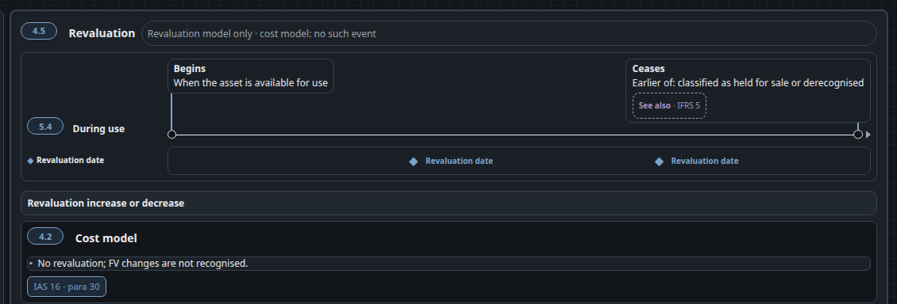

S12 · Draw the During-use axis once (rule 7)
Rule 7 — don’t restate content already on the same map. The master shows the same Begins / Ceases axis three times.
Before · live todayIAS 16 master .ch04-reval — 2nd copy of the axis (3rd is in .ch04-impair)

After · proposalone axis + event lanes
IAS 16 master — the During use axis drawn once; revaluation and impairment become event lanes under it
Lanes and diamond positions are the live ones (.lc-band-rev left 35% / 70%, .lc-band-imp left 50%). Each lane keeps its own plate below (Revaluation, Impairment); only the repeated axis goes. Needs the splice tool (tools/build-map-includes.py) to stop copying ch05-axis — direction only.